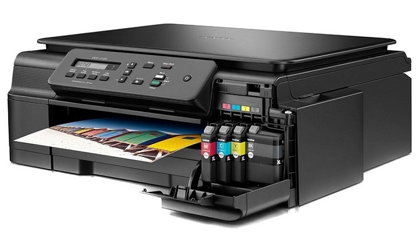

Máy In Phun Và Cấu Tạo Của Máy Như Thế Nào?
Máy in là một thiết bị được sử dụng phổ biến và không thể thiếu trong văn phòng, tất cả các loại máy in hiện nay được kết nối thông qua máy tính hoặc một chiếc máy chủ dùng để in chung. Ngoài tác dụng in ra giấy thì máy in còn được dùng để trang trí hoa văn trên các sản phẩm hay in nhãn mác.
Trên thị trường hiện nay có nhiều loại máy in khác nhau như máy in phun, máy in laser, máy in kim và máy in hóa đơn…Mỗi một loại máy in sẽ có những ưu nhược điểm, tùy vào nhu cầu, mục đích sử dụng cũng như điều kiện kinh tế của gia đình để giúp bạn có những sự lựa chọn phù hợp nhất.
1. Máy in phun là gì?
Máy in phun là loại máy in hoạt động dựa trên cơ chế phun mực vào giấy in, mực sẽ được phun thông qua một lỗ nhỏ được thiết kế trên máy theo nguyên lý từng giọt một nhưng với tốc độ cực nhanh khoảng 5000 lần/giây, mục đích là để tạo ra các điểm mực nhỏ nhưng vẫn đảm bảo độ sắc nét cho bản in.
Hầu hết máy in phun hiện nay là các dòng máy in màu nhưng có kết hợp thêm một số bản in trắng đen. Để in được màu thì tối thiểu cần 3 loại mực khác nhau, thông qua cách pha trộn 3 màu sắc cơ bản sẽ cho ra màu sắc của bản in.

2. Ưu và nhược điểm của máy in phun
Ưu điểm:
- Tốc độ in nhanh chóng, sử dụng linh hoạt.
- Giá thành tương đối rẻ.
- Ngoài in được giấy thì máy in phun còn in được nhiều loại vật liệu khác nữa.
Nhược điểm:
- Thời gian khởi động tương đối lâu.
- Chi phí trên mỗi bản in thường là lớn nhất.
- Chi phí thay hộp mực tốn kém.
3. Cấu tạo của máy in phun
– Đầu in: Là bộ phận quan trọng nhất để tạo ra bản in , đầu in bao gồm hàng loạt vòi phun được dùng để phun những giọt mực tạo thành các hình ảnh, chữ viết.
– Hộp mực : Phụ thuộc vào nhà sản xuất và kiểu của máy in . Hộp mực trong máy in phun cũng giống như cơ quan cung cấp nguồn nguyên liệu mực in cho quá trình in ấn. Nếu hộp mực có vấn đề, hết mực hoặc tắc nghẽn mực thì máy in phun sẽ ko hoạt động tốt được. Hộp mực máy in phun bao gồm mực in trắng đen và mực in màu, nếu máy in phun màu cần ít nhất 3 hộp mực đỏ-xanh-vàng và thêm hộp mực đen tùy dòng máy.
– Motor bước đầu máy in : Motor bước di chuyển bộ phận đầu in ( đầu in và đầu mực ) đằng sau và từ bên này sang bên kia của giấy . Một vài máy in có Motor bước khác để chuyển bộ phận đầu in tới một vị trí cố định cho trước khi máy in không hoạt động . Việc chuyển vào vị trí đó để bộ phận đầu in được bảo vệ khi một va chạm bất ngờ
– Dây Curoa: Nó được dùng để gắn bộ phận đầu in với Motor bước đầu.
– Thanh cố định: Bộ phận đầu in dùng thanh cố định chắc chắn để sự di chuyển là chính xác và điều khiển được.
– Khay giấy: Hầu hết máy in phun đều có bộ phận khay giấy để đưa giấy vào bên trong máy in . Một vài máy in bỏ qua khay giấy chuẩn thông thường mà dùng bộ phận nạp giấy ( Feeder ) . Feeder thông thường mở để lấy giấy tại một góc ở sau máy in và nó giữ nhiều giấy hơn khay giấy truyền thống.
– Trục lăn: Nó kéo giấy từ khay giấy hoặc phần nạp giấy đến vị trí sẵn sang để đầu in làm nhiệm vụ tiếp theo của quá trình in.
– Motor cho bộ phận nạp giấy: kéo trục lăn để chuyển giấy vào vị trí chính xác
– Nguồn cung cấp: Đối với những máy in trước kia có một Adaptor bên ngoài để cung cấp nguồn cho máy in thì hiện nay hầu hết chúng được tích hợp bên trong máy in.
– Mạch điều khiển: Một mạch điện phức tạp bên trong máy in để điều khiển tất cả mọi hoạt động như giải mã tín hiệu thông tin gửi từ máy tính tới máy in ….
– Cổng giao diện: Nhiều máy in dùng cổng song song , nhưng hầu hết máy in mới bây giờ đều dùng giao diện cổng USB . Có một vài máy in dùng cổng nối tiếp hoặc cổng SCSI.
Trên đây là các bộ phận cấu tạo nên máy in phun thông thường. Mỗi bộ phận đều thực hiện những chức năng riêng và đều giữ vị trí quan trọng trong hoạt dộng của máy in phun. Bạn nên tiến hành kiểm tra và bảo dưỡng máy in phun thường xuyên (đặc biệt là hộp mực) để máy in phun hoạt động ổn định và hiệu quả dài lâu hơn.
Cần nạp mực hoặc sửa máy in tận nơi? Mực In Trường Phát có mặt trong 30 phút tại TP.HCM — in test trước khi tính tiền, bảo hành 1 tháng.
0908.327.123 · 0819.007.394 (Zalo cả 2 số)